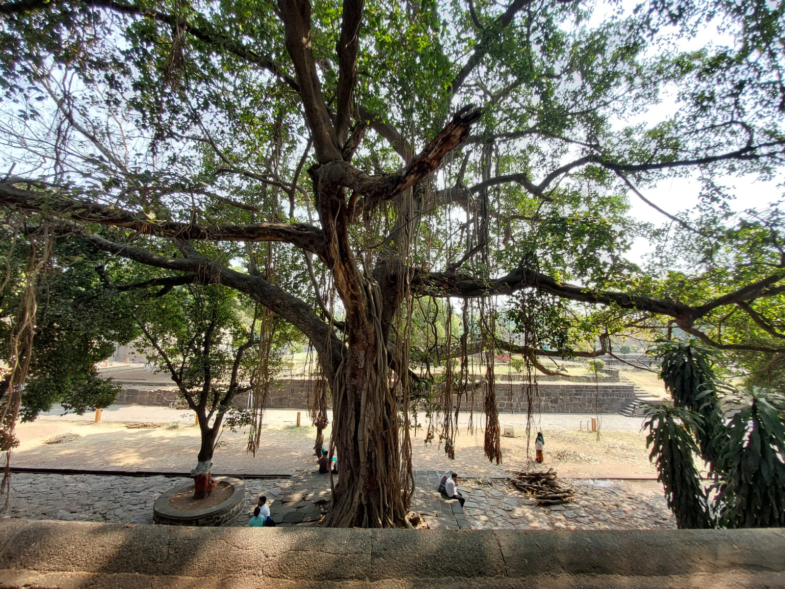

The Phoenix tree
22nd Feb, 2026
I've been to Pune recently. It's a beautiful city with rich culture, delicious food, and cool cafes.
While I was there, I booked a heritage walk from Guru Walk. We walked through Shaniwar Wada, Laal Mahal, Century Point, and Bhausaheb Rangari Bhavan Museum.
Along the way, I learned the history, stories, and rumours tied to each place.Of all those, one tree caught my interest the most. It's a massive banyan tree inside Shaniwar Wada.
Shaniwar Wada was the nerve center of Maratha power in the 18th century. It hosted royal ceremonies, court sessions, and military strategy. Then in 1828, a mysterious fire broke out and burned for seven days. It swallowed almost everything inside.
The banyan tree burned too. But its roots survived. And from those roots, the tree grew back.
The moment I heard that, all I could think of was Phoenix, the mythical bird that rises from its own ashes. So that's what I call it now: the Phoenix tree.
It also feels like a quiet metaphor for the Maratha spirit. The Mughals pushed them. The British dismantled them. But something carried forward. You can feel it in the stories people still tell, in the pride that shows up when someone talks about Shivaji Maharaj or Baji Rao. Like the tree, it never fully went away.
Some things just can't be destroyed. They take root again, come back, and live on!
Now, every time someone mentions Pune, the Phoenix tree is the first thing I think of.
